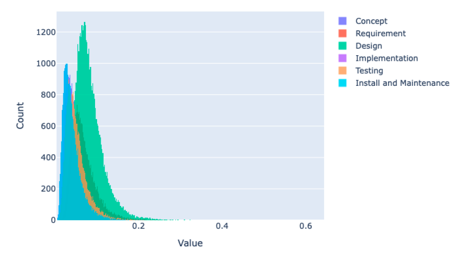
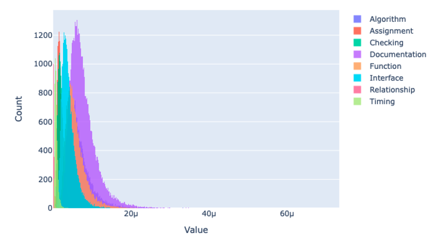
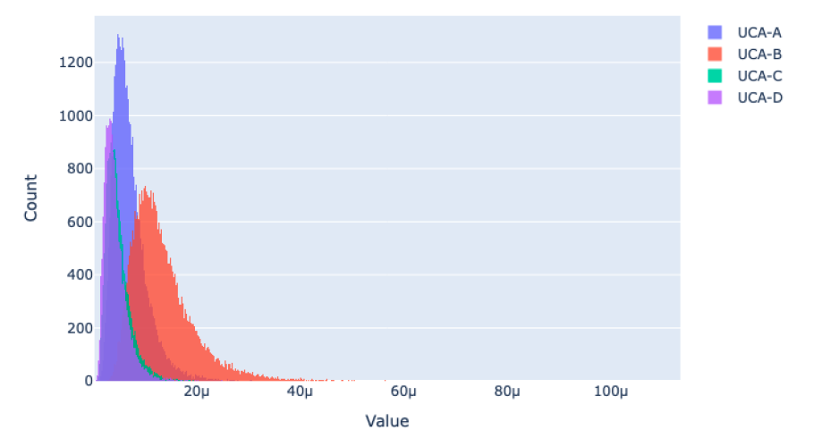
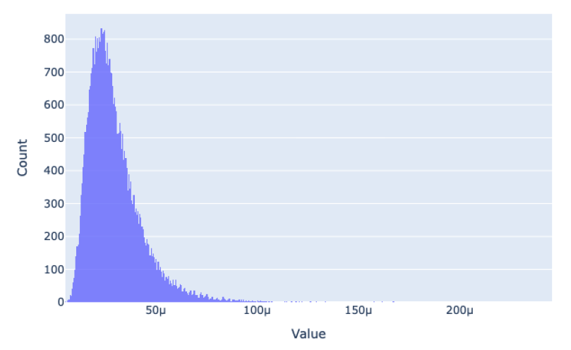

Example
Example: Software Failure Probability Evaluation
Run
conda activate bahamas_libs
cd /path/to/BAHAMAS/examples
python ../bahamas/main.py -i bbn.toml
BAHAMAS Input
[BBN]
[BBN.params]
samples = 40000
seed = 2
[BBN.files]
task = "../data/Example_ComprehensiveAssessment_Task_List.xlsx"
defect = "../data/Example_ComprehensiveAssessment_Defect_Data.xlsx"
approx = "../data/Example_PreliminaryAssessment.xlsx"
[BBN.analysis]
type = 'precise'
Screen Output
10-Aug-26 10:00:05 BAHAMAS INFO Welcome to use BAHAMAS!
10-Aug-26 10:00:05 BAHAMAS.Workflow INFO Initialization
10-Aug-26 10:00:05 BAHAMAS.validate INFO TOML input file is valid.
10-Aug-26 10:00:05 BAHAMAS.Workflow INFO Start BBN Calculation ...
10-Aug-26 10:00:05 BAHAMAS.ODC INFO Construct ODC Conditional Distribution for each SDLC stage
10-Aug-26 10:00:05 BAHAMAS.UCA INFO Construct UCA ODC defect correlation distribution.
10-Aug-26 10:00:05 BAHAMAS.BBN INFO Sampling HEP and DCP
10-Aug-26 10:00:05 BAHAMAS.HEP INFO Calculate SDLC "Concept" stage HEP
10-Aug-26 10:00:05 BAHAMAS.DCP INFO Calculate DCP for SDLC "Concept" stage
10-Aug-26 10:00:05 BAHAMAS.HEP INFO Calculate SDLC "Requirement" stage HEP
10-Aug-26 10:00:05 BAHAMAS.DCP INFO Calculate DCP for SDLC "Requirement" stage
10-Aug-26 10:00:05 BAHAMAS.HEP INFO Calculate SDLC "Design" stage HEP
10-Aug-26 10:00:05 BAHAMAS.DCP INFO Calculate DCP for SDLC "Design" stage
10-Aug-26 10:00:05 BAHAMAS.HEP INFO Calculate SDLC "Implementation" stage HEP
10-Aug-26 10:00:05 BAHAMAS.DCP INFO Calculate DCP for SDLC "Implementation" stage
10-Aug-26 10:00:05 BAHAMAS.HEP INFO Calculate SDLC "Testing" stage HEP
10-Aug-26 10:00:05 BAHAMAS.DCP INFO Calculate DCP for SDLC "Testing" stage
10-Aug-26 10:00:05 BAHAMAS.HEP INFO Calculate SDLC "Install and Maintenance" stage HEP
10-Aug-26 10:00:05 BAHAMAS.DCP INFO Calculate DCP for SDLC "Install and Maintenance" stage
10-Aug-26 10:00:05 BAHAMAS.BBN INFO Sampling ODC
10-Aug-26 10:00:06 BAHAMAS.BBN INFO Sampling UCA
10-Aug-26 10:00:06 BAHAMAS.BBN INFO Compute marginal ODC
10-Aug-26 10:00:06 BAHAMAS.BBN INFO BBN Propagation
10-Aug-26 10:00:06 BAHAMAS.BBN INFO Compute UCA and total failure probabilities
10-Aug-26 10:00:07 BAHAMAS.Workflow INFO Software total failure: 0.00011614760909227373 with std 3.438269227352369e-05
10-Aug-26 10:00:07 BAHAMAS.Workflow INFO UCA type: UCA-A, Mean: 2.7782010768988948e-05, STD: 9.069918324397598e-06
10-Aug-26 10:00:07 BAHAMAS.Workflow INFO UCA type: UCA-B, Mean: 5.2345801107573475e-05, STD: 1.5470392065588738e-05
10-Aug-26 10:00:07 BAHAMAS.Workflow INFO UCA type: UCA-C, Mean: 1.9042520360647382e-05, STD: 6.9513036318585195e-06
10-Aug-26 10:00:07 BAHAMAS.Workflow INFO UCA type: UCA-D, Mean: 1.6977276855063943e-05, STD: 6.5107351550053566e-06
10-Aug-26 10:00:07 BAHAMAS.Workflow INFO End BBN Calculation
10-Aug-26 10:00:07 BAHAMAS INFO ... Complete!
Plots
{kind=link}

Figure 5 SDLC Stage Failure Probabilities Based on Human Error Propagation
{kind=link}

Figure 6 Software Orthogonal Defect Classification Failure Probabilities
{kind=link}

Figure 7 Software Unsafe Control Action Failure Probabilities
{kind=link}

Figure 8 Total Software Failure Probability
Example: Common Cause Component Group Generation
Run
conda activate bahamas_libs
cd /path/to/BAHAMAS/examples
python ../bahamas/main.py -i ccf.toml
BAHAMAS Input
[CCF]
[CCF.files]
structure= "../data/Example_CCCG_Identification.xlsx"
[CCF.generate]
output_file_base = "cccg"
output_type = "csv"
final = true
single = true
double = true
triple = true
Screen Output
10-Aug-26 10:00:30 BAHAMAS INFO Welcome to use BAHAMAS!
10-Aug-26 10:00:30 BAHAMAS.Workflow INFO Initialization
10-Aug-26 10:00:31 BAHAMAS.validate INFO TOML input file is valid.
10-Aug-26 10:00:31 BAHAMAS.Workflow INFO Start CCCGs generation
10-Aug-26 10:00:31 BAHAMAS.CCCG INFO Generating
10-Aug-26 10:00:31 BAHAMAS.Workflow INFO End CCCGs generation
10-Aug-26 10:00:31 BAHAMAS INFO ... Complete!